Young Talent of the Year
2023 Berkeley World Business Analytics Awards · Fisher Center for Business Analytics, UC Berkeley Haas
Awarded for C du Propre, a computer-vision system that spots litter in cities, built with my OSM'OZ co-founders.
Chapter 06 · Awards
An award means more when you know the room it was given in. Here are the four, starting with UC Berkeley: the place, the day, and who was there.
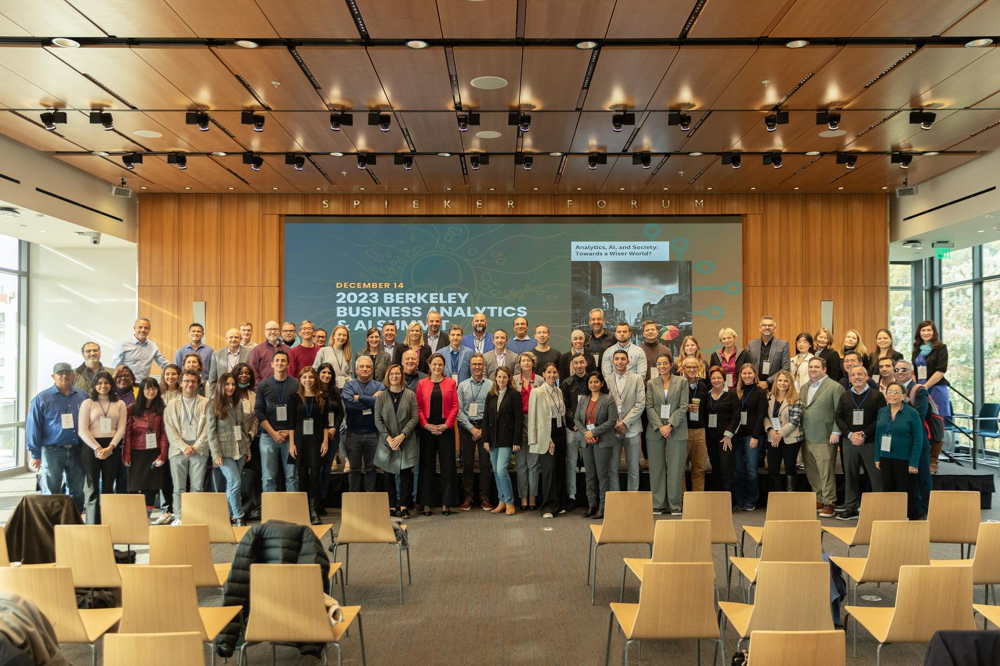
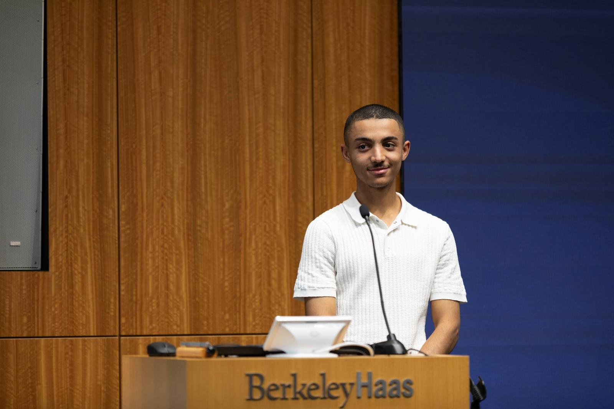
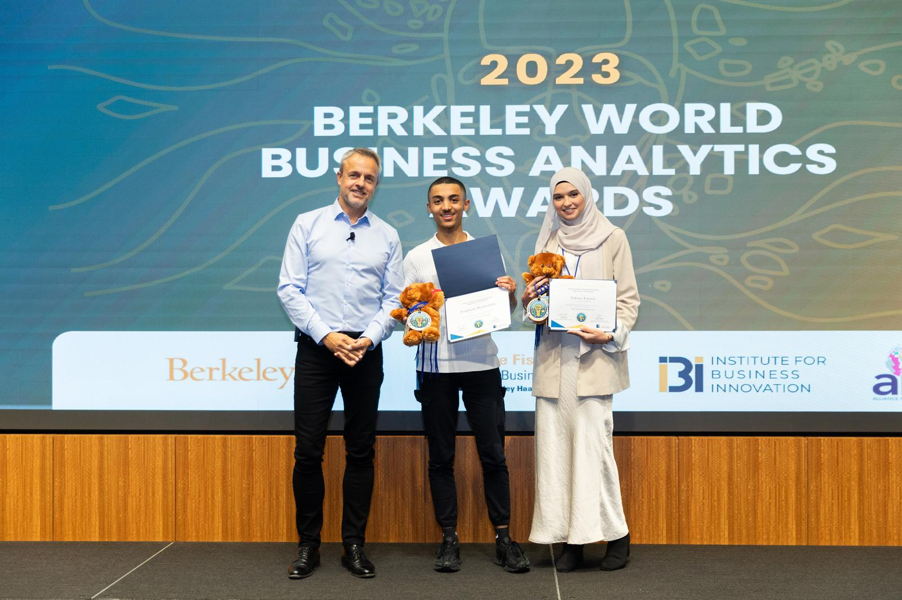
2023 Berkeley World Business Analytics Awards · Fisher Center for Business Analytics, UC Berkeley Haas
Awarded for C du Propre, a computer-vision system that spots litter in cities, built with my OSM'OZ co-founders.
Running order from the summit's published programme.
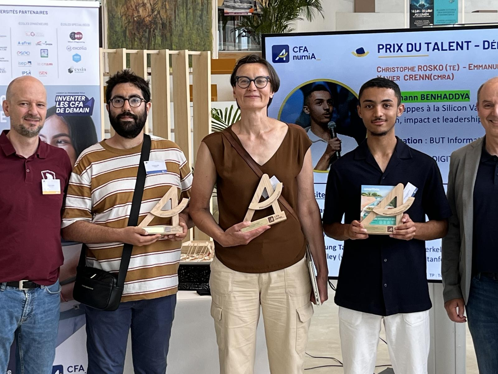
Prix du Talent 2025, best apprentice of my BUT cohort · CFA numiA × Université Paris-Saclay
Paris · June 2023
KESK'IA is a national AI programme for young people from working-class neighbourhoods, run by the start-up Evolukid with eight large companies. Its first edition ended in two rooms, six days apart.
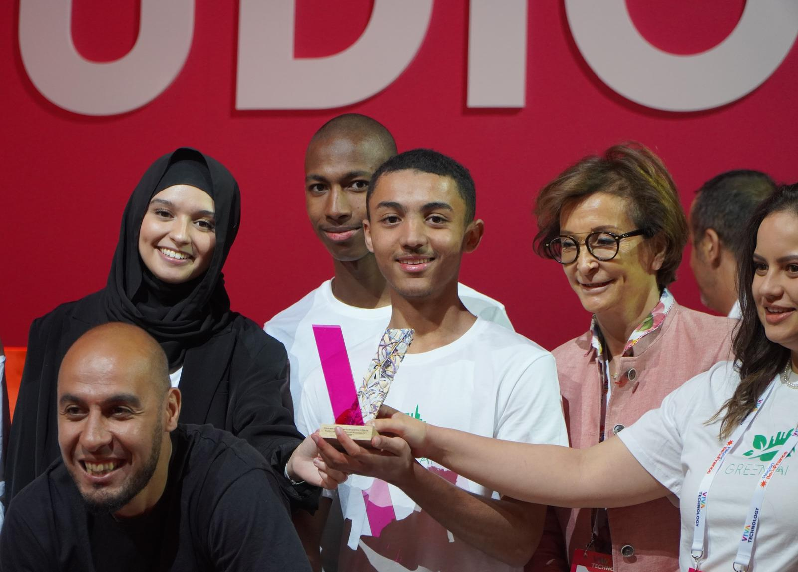
VivaTech, with C du Propre (GreenAI). One of the three winning teams out of 22.
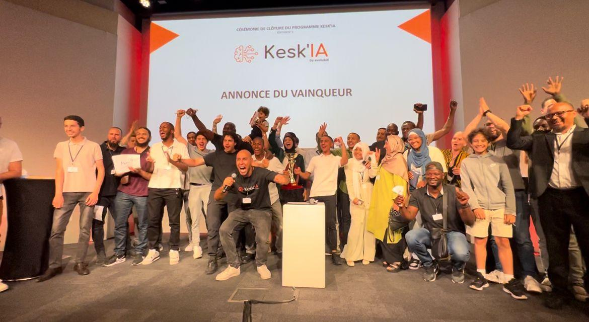
First edition of the national AI programme. Of the three teams on the podium, ours takes first place.
The prize · California
Winning the final came with a trip to California. We visited the campuses of Google, Apple, Microsoft and Salesforce, walked through Berkeley, and met professors at Stanford. Banlieusard Nouveau followed us with a camera and made a documentary of it.
Watch "De Trappes à la Silicon Valley" ↗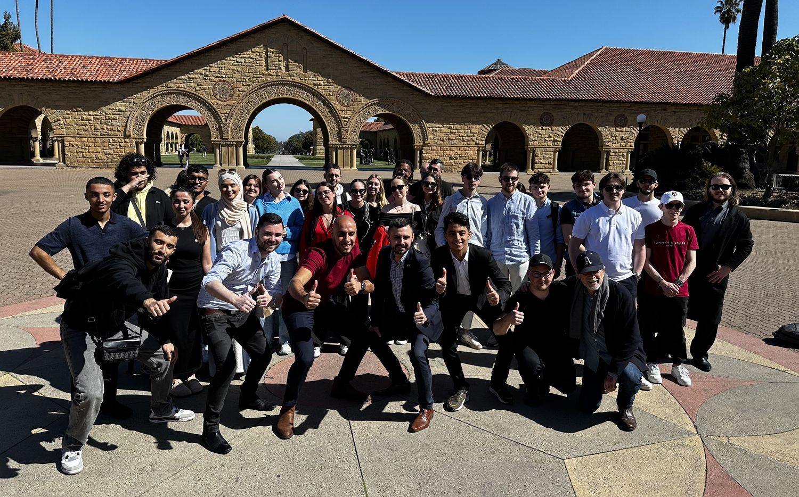
Credits
Fin.
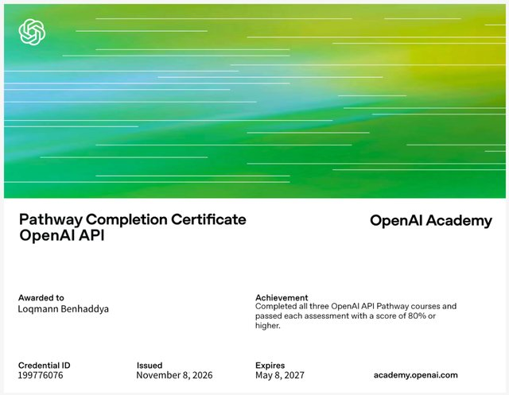
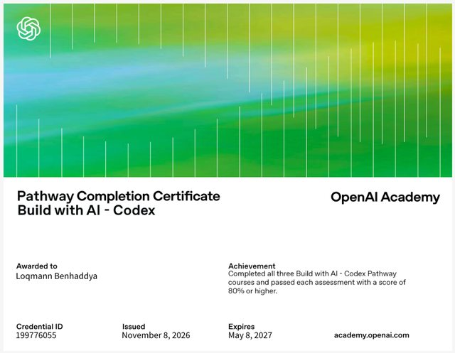
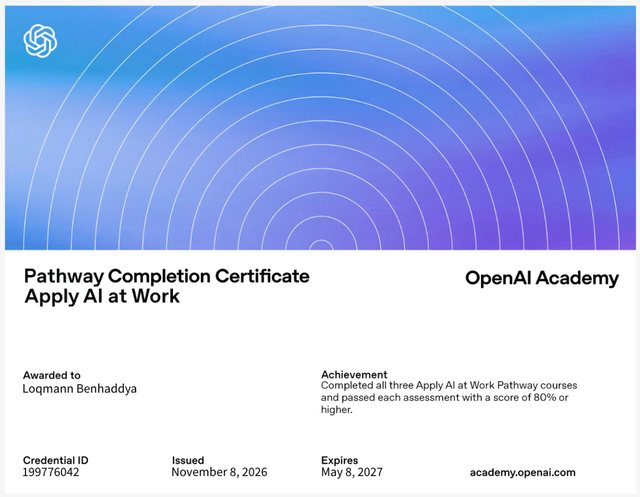
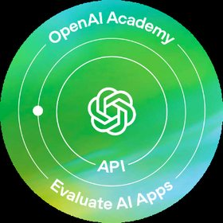
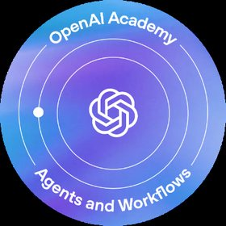
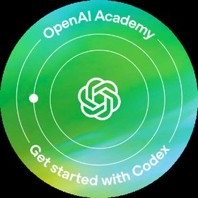
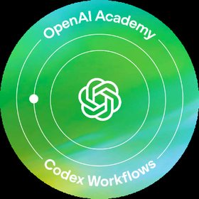
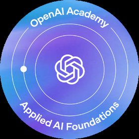
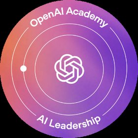
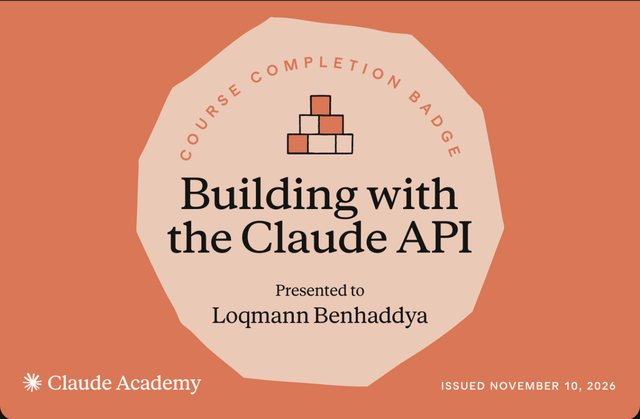
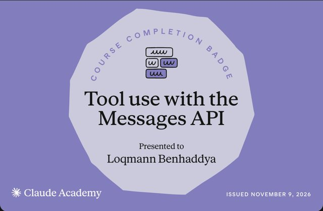
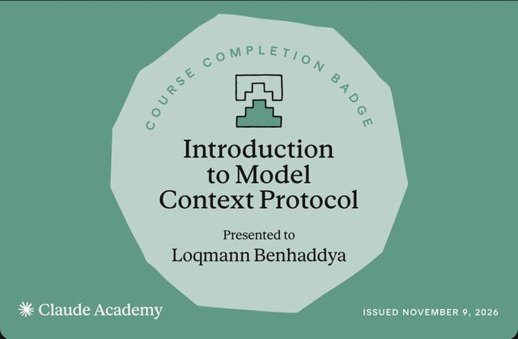
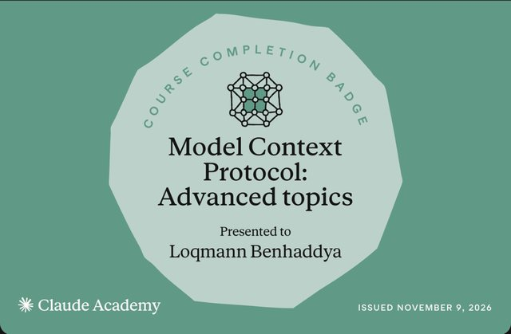
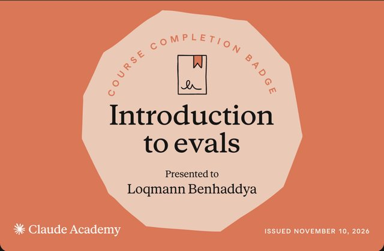
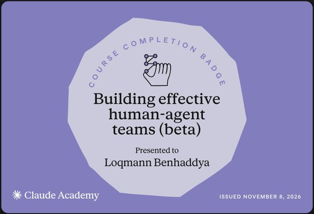
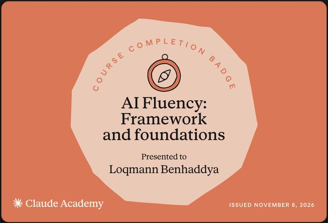
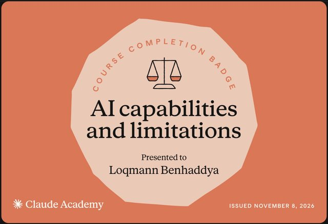
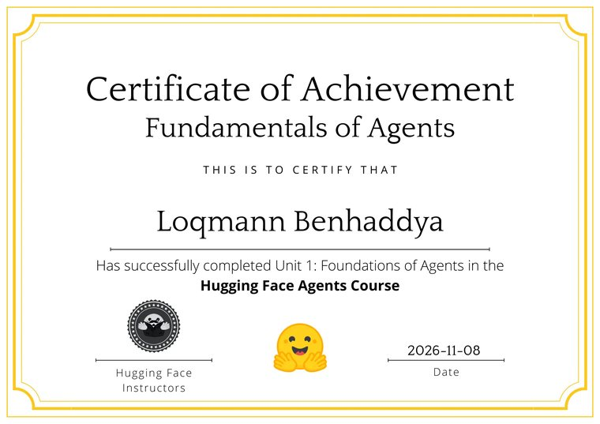
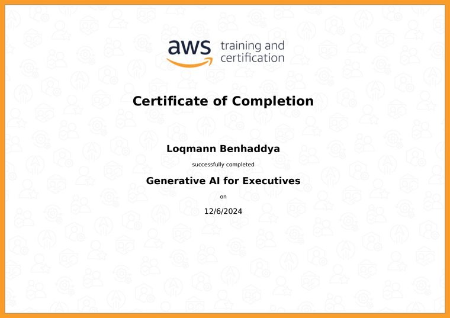
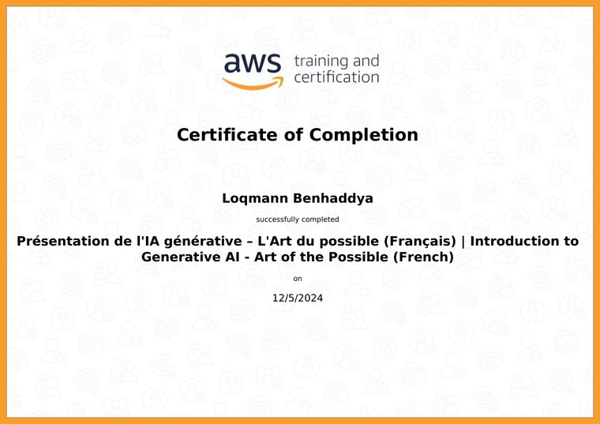